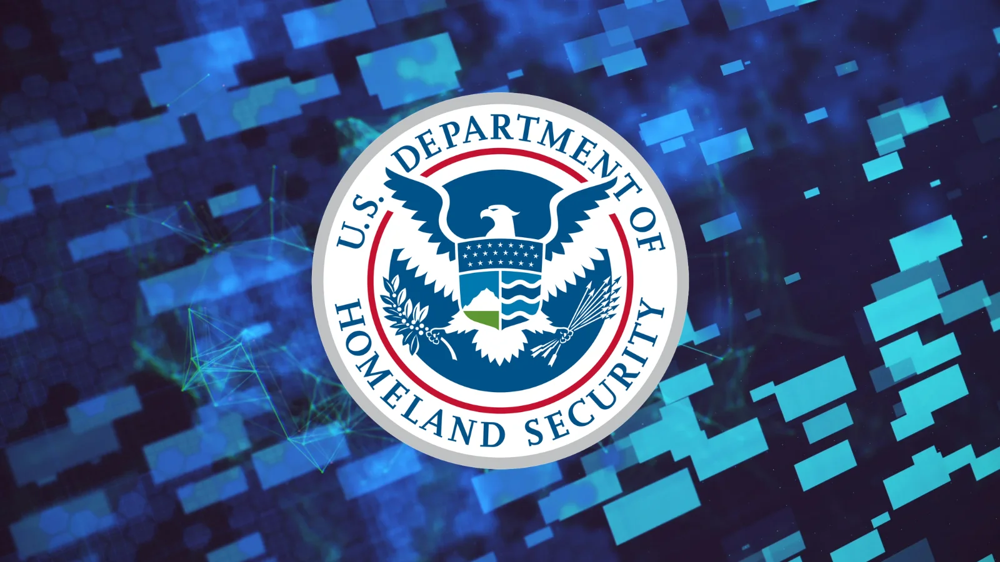

Публикация вышла 28 октября 2026 года. По данным самого DDoSecrets, база сформирована из службы единого входа Okta, которую использовал DHS, и последовательно обновлялась 19 августа 2026 года. Внутри — имена, рабочие адреса почты, телефоны, офисы, должности и руководители сотрудников DHS и семи его ведомств. Больше половины записей пришлось на Таможенно-пограничную службу (CBP), около 10 тысяч — на иммиграционную полицию ICE, примерно 6,2 тысячи — на службу гражданства (USCIS) и почти тысячу — на кибербезопасников из CISA. Всего это примерно одна седьмая штата министерства, а не весь DHS.
Самое чувствительное — свыше 55 тысяч групп доступа к внутренним системам. Журналисты WIRED нашли в группах с пометкой «CUC» 39 сотрудников следственного управления Homeland Security Investigations: именно такую аббревиатуру суды в открытых материалах связывают с заверёнными оперативными мероприятиями. Другие группы отсылают к прослушке и анализу телефонных данных.
Данные передал группе хактивистов «Department of Peace» — тот же источник, что в марте выложил контракты DHS и ICE с шестью тысячами компаний. Поиск по архиву собрал исследователь и журналист Майя Арсон Crimew: её инструмент не просто индексирует сырые файлы, но и чистит и дополняет их. При этом способ кражи до сих пор не подтверждён: DDoSecrets утверждает, что данные утёкли из Okta, Reuters эту версию проверить не смог, а сама Okta заявила, что её системы в безопасности и следов компрометации нет.
Эксперты Recorded Future предупреждают: фамилии в связке с должностями, телефонами и именами руководителей — готовый материал для прицельного фишинга и маскировки под «своего». Публикация идёт на фоне других шумных инцидентов: сентябрьских заявлений ShinyHunters о данных сотрудников ФБР и октябрьского иска из-за взлома структур Пентагона. Причина у всех разная, общего взломщика не найдено.
Даже если сам Okta оказался ни при чём, история полезна как напоминание: каталоги пользователей и карты прав доступа — отдельный класс добычи. Атакующему часто нужен не шифр базы, а оргструктура: по ней собирают убедительное письмо «от начальства» куда надёжнее, чем по случайному списку адресов. Сотрудникам госсектора и подрядчикам после таких утечек стоит ждать персонализированных атак на звонки и сброс паролей — это та самая классика helpdesk-фишинга, к которой готовятся заранее, а не постфактум.